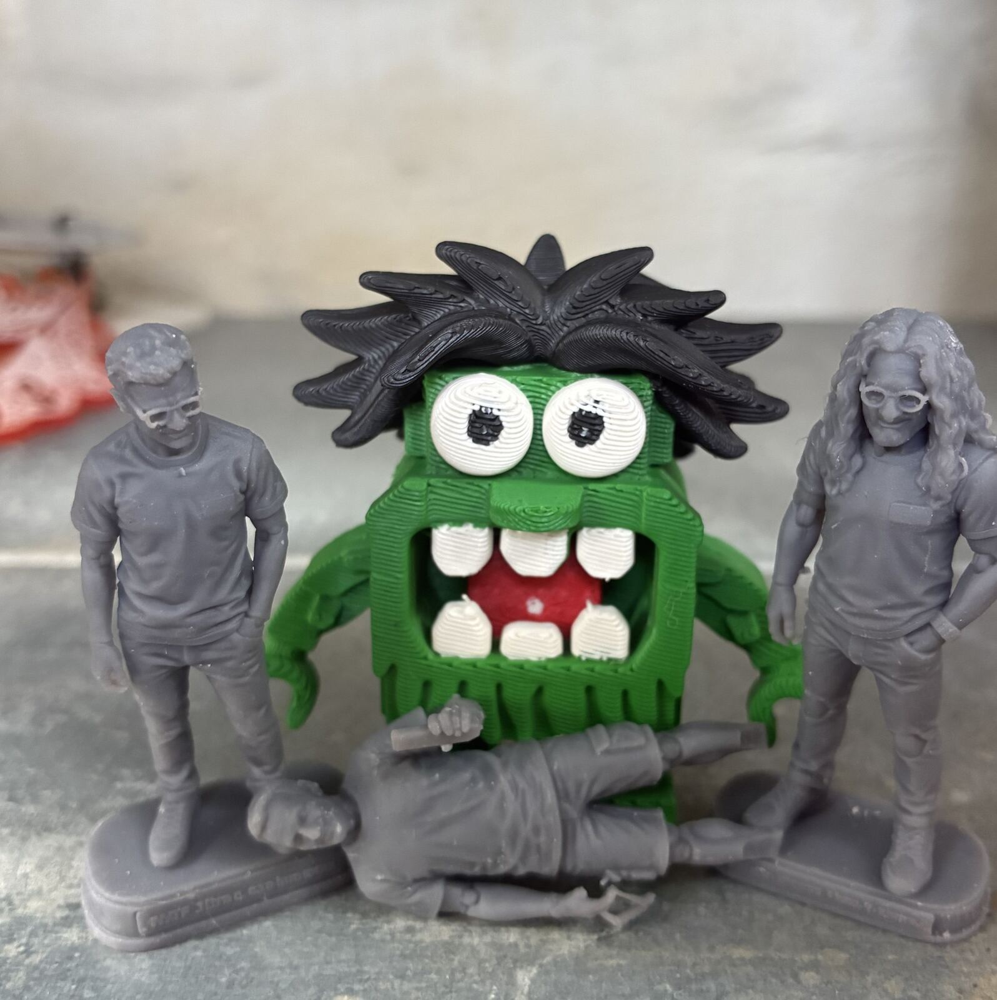
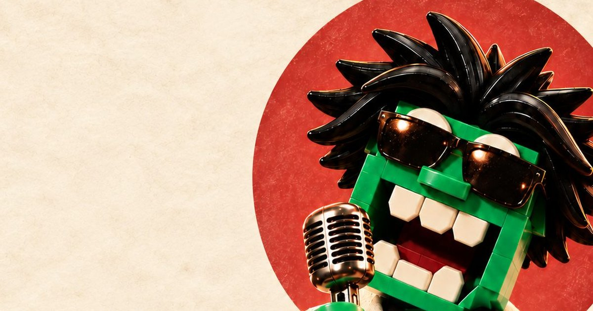

Part one · twenty years ago
The virus that wrote a hit song
Back when Macromedia Flash was popular, I spent three weeks learning it to build an app for a movie website. Then I accidentally ran some malware. The screen turned grey, the computer worked furiously, and instead of shutting it down, I waited.
Bad idea.
The compiled app survived. The source code didn’t. No backup, naturally. That evening, among the surviving files, I found a recording of a famous German Schlager singer:
„Alles verloren, was ich hab“
“I’ve lost everything I had.”
Perfect. I sampled it and wrote Alles verloren, a song about losing my work and wishing I were a sheep farmer instead of a developer. A drummer friend took it further and entered it in Austria’s Protest Song Contest, an alternative to Eurovision. It came third, got radio airplay and ended up on compilations.
It earned me more royalties than anything else in my musical career.
I still had to rewrite that Flash application.
Part two · today
The monster that escaped the CI pipeline

Now I work on Kibana at Elastic, where our CI suffered from flaky tests. Our theory: the pipeline was cursed by a Flaky Test Monster. When I went on vacation and the flakiness dropped, my colleagues suspected me. AI confirmed it: the monster looked suspiciously like me.
The joke became an emoji, a LEGO-style figure, then a 3D print. At a makerspace I turned whole teams into 3D characters, and exhibited the monster with a webcam-to-3D pipeline that turns visitors into monsters.
But it didn’t stop there.
The Flaky Test Monster started making music.

Next stop: the Eurovision Song Contest. Or the world’s first Flaky Test Monster Rock Opera.